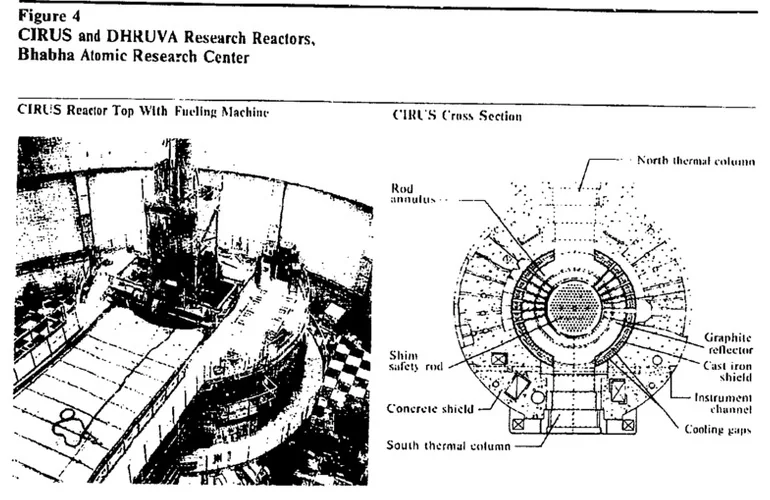
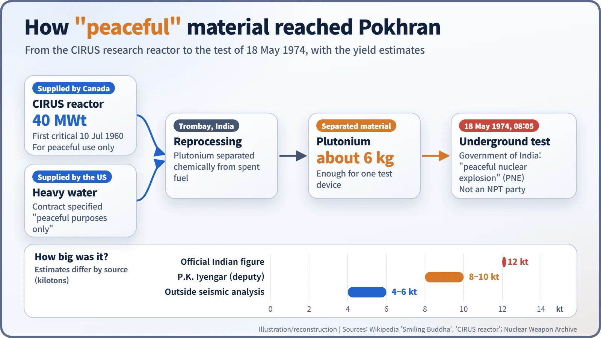
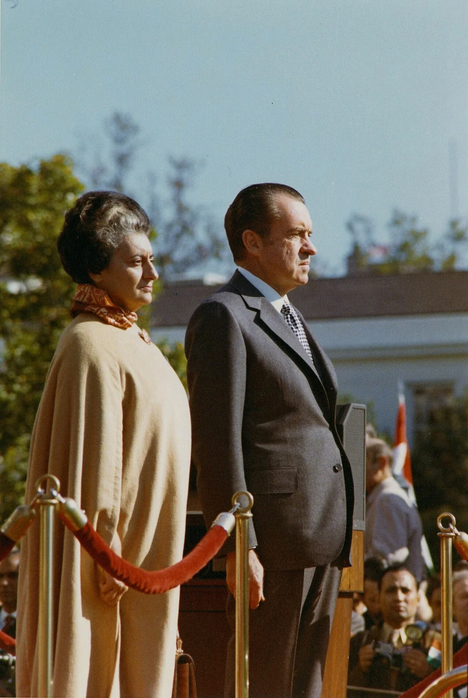
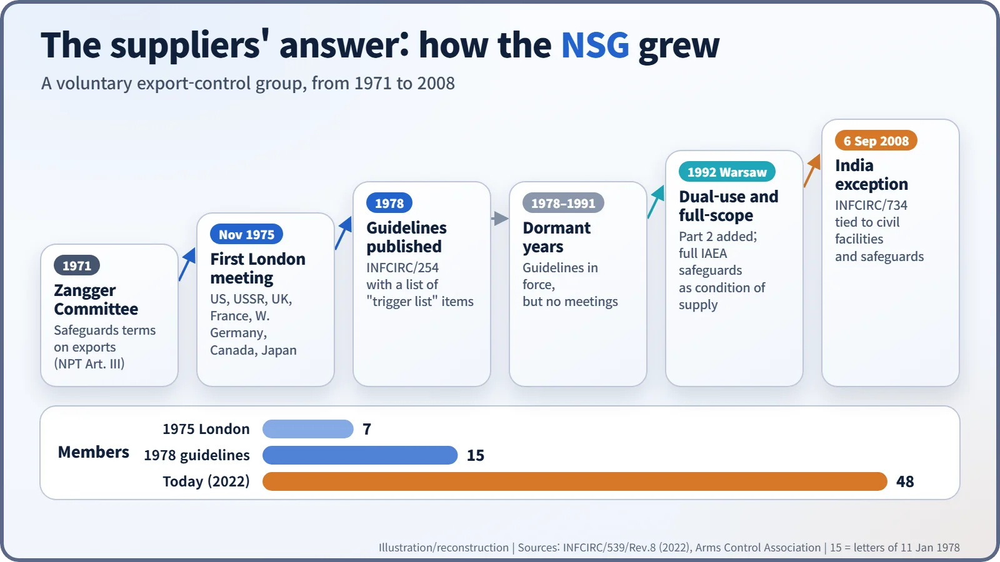
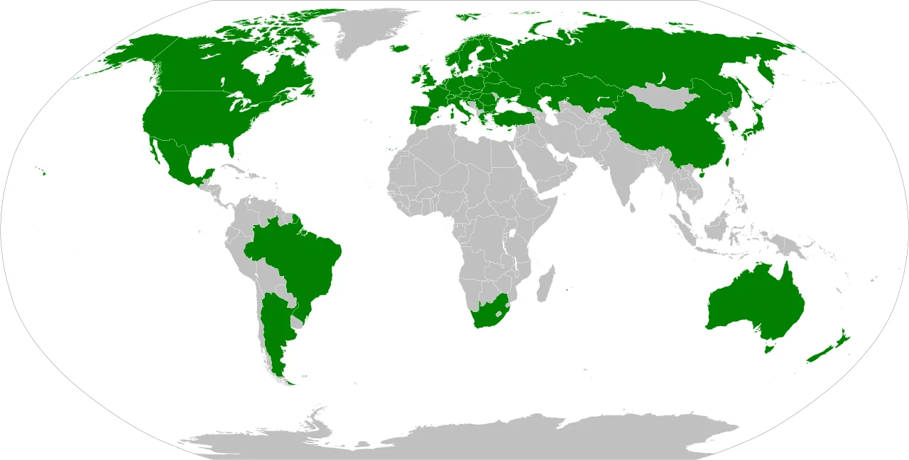

Nuclear History · 235
Five Minutes Late in the Desert — India's "Smiling Buddha" Test (1974) and the Birth of the Nuclear Suppliers Group
India called its 18 May 1974 test a peaceful nuclear explosion; the supplier countries whose "peaceful" reactor and heavy water had made it possible met in London to write new export rules.
On 18 May 1974 India carried out an underground nuclear test at Pokhran, which its government called a "peaceful nuclear explosion". The plutonium had come from CIRUS, a research reactor supplied by Canada and moderated with US heavy water on condition of peaceful use. The shock led seven supplier countries to meet in London in November 1975, the start of what became the Nuclear Suppliers Group.
Five minutes late in the desert
On the morning of 18 May 1974, at the Pokhran test range in the Thar Desert of Rajasthan, the countdown was meant to end at 8:00. According to one detailed account, a jeep broke down and the schedule slipped by five minutes. At 8:05 India Standard Time, the ground heaved above a shaft roughly 107 metres deep. [3]
The operation was called "Smiling Buddha". The Government of India described it as a "peaceful nuclear explosion" (PNE), a test of explosive technology for civil engineering, not a weapon. But a five-minute delay in the desert turned into something much bigger than a national event. It made the countries that sell nuclear equipment sit down and compare their export ledgers. [4]
A reactor that came with a "peaceful" label
Where did the roughly 6 kg of plutonium come from? From CIRUS, a research reactor at Trombay near Mumbai. Canada supplied this 40-megawatt (thermal) reactor, which first went critical on 10 July 1960. The United States supplied the heavy water that served as its moderator, the substance that slows neutrons down. [5]

Canada made its supply conditional on peaceful use, and the US heavy-water contract said the same. Burning fuel in a reactor slowly creates plutonium inside it, and India separated that plutonium chemically at its reprocessing plant at Trombay.
Here the interpretations split. India's position was that its agreement with Canada ruled out weapons but did not rule out a peaceful nuclear explosion. India was not a party to the Nuclear Non-Proliferation Treaty (NPT), so no treaty had been broken. Canada concluded that a 1971 understanding had been violated and froze its nuclear assistance at once; in May 1976, after talks on stronger safeguards failed, it formally ended nuclear cooperation. The United States judged that no agreement had been violated and went ahead with a June 1974 shipment of enriched uranium for the Tarapur power station. [4] [6]

Disputed numbers, disputed code words
The device was an implosion design, in which explosives squeeze plutonium evenly from all sides. Public accounts put its mass at about 1,400 kg and its diameter at 1.25 m. Raja Ramanna (1925–2004), director of the Bhabha Atomic Research Centre, led the project, working with Homi Sethna (1923–2010), chairman of the Atomic Energy Commission. The final decision lay with Prime Minister Indira Gandhi (1917–1984). [3] [4]

Even the size of the blast resists a single number. The official Indian figure was 12 kilotons of TNT equivalent. Outside seismic analyses pointed to 4–6 kt, while P.K. Iyengar, Ramanna's deputy, has given 8–10 kt. Sethna and Iyengar later conceded that the official figure was an exaggeration, and in 1997 Ramanna said: "The Pokhran test was a bomb, I can tell you now." [3]
Then there is the famous code message. Sethna is supposed to have telephoned the prime minister's office with the words "The Buddha is smiling." Treat this as a story often told rather than an established fact: Sethna denied using the phrase, and P.N. Dhar, the prime minister's principal secretary at the time, agreed it was not used. [3]
The suppliers' club in London
What shook the supplier countries was simple. Technology sold for peaceful purposes, with conditions attached, could still end up in an explosive device. The group's own official history later called the test "an event which demonstrated that nuclear technology transferred for peaceful purposes could be misused." [1]
In November 1975 seven countries met in London: the United States, the Soviet Union, the United Kingdom, France, West Germany, Canada and Japan. Hence the nickname, the "London Club". Together they refined a "trigger list" of items such as reactors, nuclear fuel and reprocessing equipment that could be exported only if the receiving country accepted inspections by the International Atomic Energy Agency (IAEA). Their guidelines were published in 1978 as IAEA document INFCIRC/254. [1]
The group is not a treaty. Its members coordinate their export controls voluntarily and take every decision by consensus. From 1978 to 1991 the guidelines stayed in force, but the group itself stopped meeting. [1] [2]
Iraq and a second beginning
The wake-up call was the 1991 Gulf War, which revealed that Iraq had run a secret nuclear programme partly by buying "dual-use" equipment, such as machine tools, that also has ordinary industrial uses. At its 1992 plenary in Warsaw, the group adopted guidelines for dual-use items as Part 2 of INFCIRC/254. It also made "full-scope" safeguards, IAEA inspection of all of a country's nuclear material, a condition for supplying trigger-list items to any non-nuclear-weapon state. [1]

Under that rule, India was effectively shut out of nuclear trade. The twist came in 2008. India agreed to separate its civilian and military facilities, to place its civilian facilities under IAEA safeguards and to keep its moratorium on nuclear testing. On 6 September 2008, the group adopted a statement allowing civil nuclear cooperation with India (INFCIRC/734). Thirty-four years after its test had brought the group into being, India became the subject of its best-known exception. [1] [6]

One question that stuck
A club of seven has become a group of 48 participating governments. The question those five minutes at Pokhran left behind is a simple one: "Where will this end up?" The idea that sharing technology must go hand in hand with asking how it will be used is now written into nuclear export contracts around the world. [2]